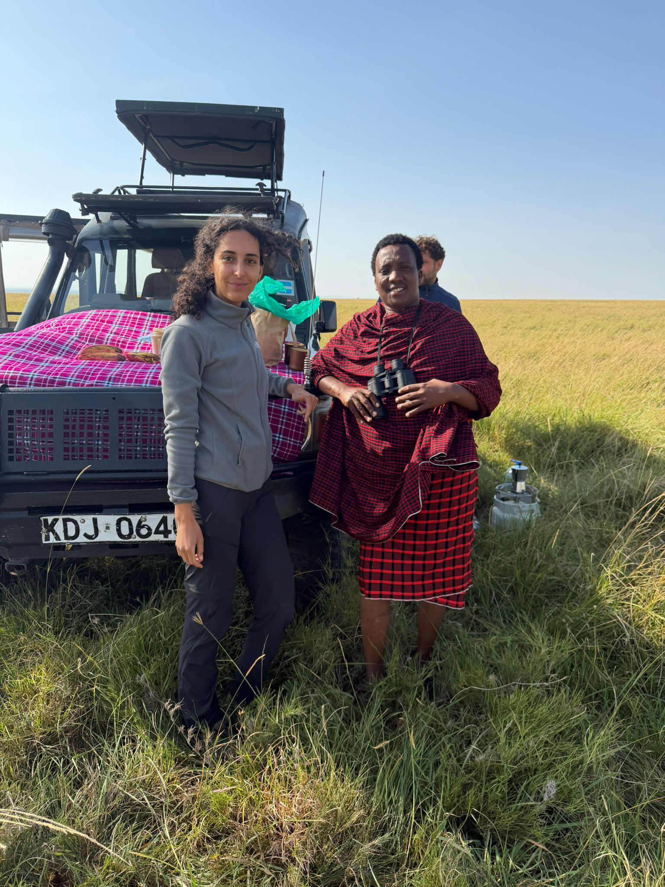
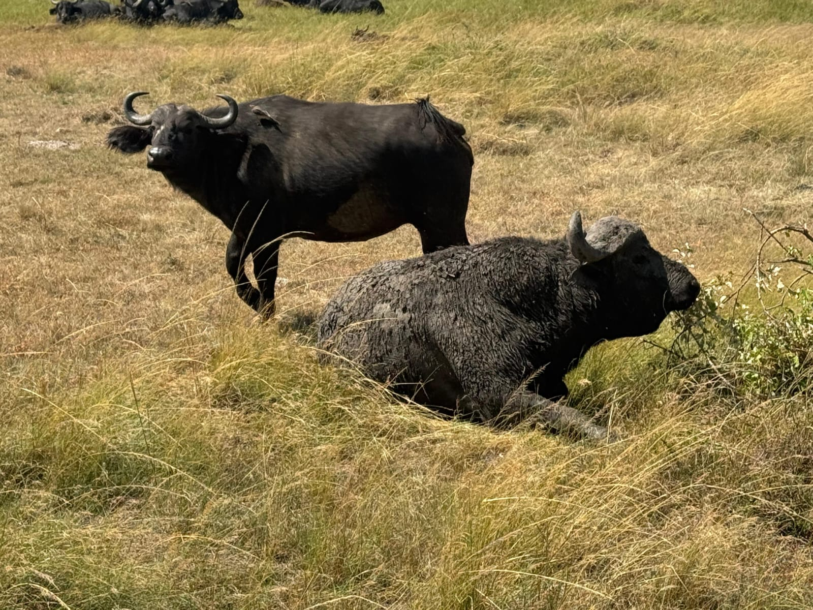
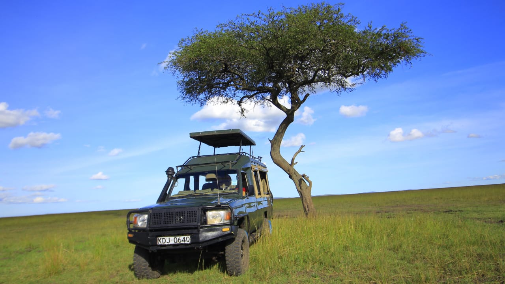
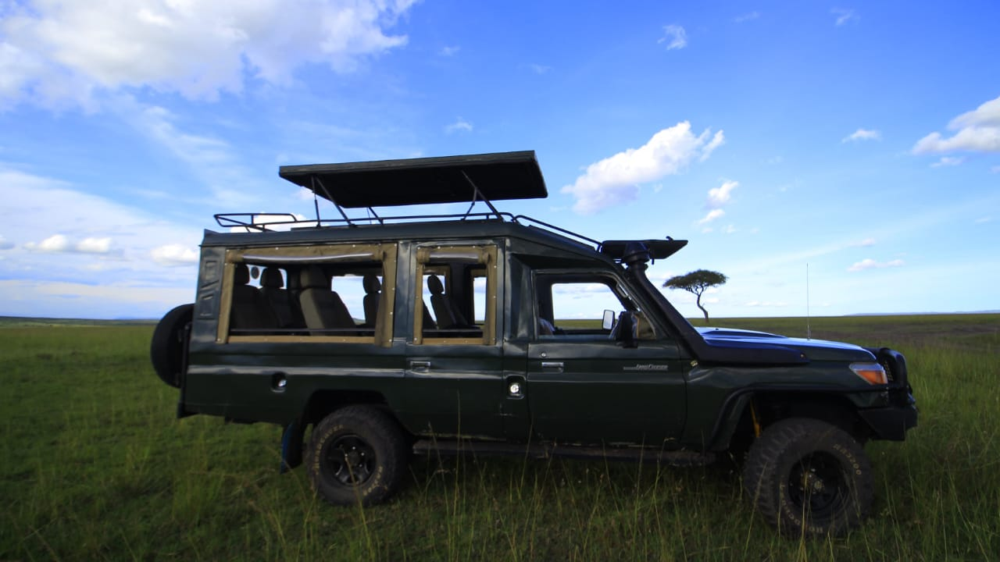
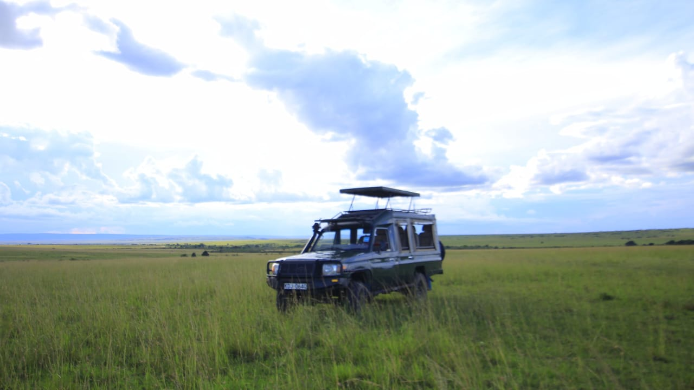
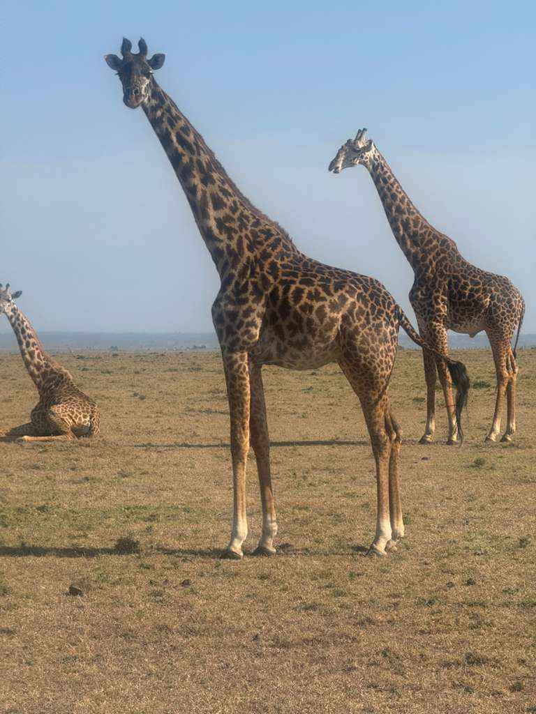

WHO WE ARE
Before they guided guests across the sweeping grasslands of the Masai Mara, Ken and Daisy spent years working side by side in an international NGO — dedicated to conservation and community development in East Africa. It was rewarding, important work. But something was missing.
The wild. The raw, unfiltered connection with nature that had drawn them both to Kenya in the first place. The dawn chorus of a thousand birds. The moment a lioness locks eyes with you across golden grass. The silence of the savannah at sunset.
So they made a decision. Together, Ken and Daisy left the office world behind and founded BobKen Tours — a small, personal, deeply passionate safari company rooted in genuine love for the Masai Mara and its wildlife. Every guest is treated as a friend, every game drive planned with care, and every moment in the bush shared with the same wonder they felt on their very first Mara sunrise.

Left: Ken scouting tourist on Maasai Mara plains

Right: Male buffalo
MEET YOUR GUIDES
Born into the Maasai community of the Mara region, Ken has spent a lifetime learning the rhythms of the savannah. He can read an animal's behaviour from a kilometre away, track lion movement through bent grass, and find the leopard that no one else spots. His deep cultural roots open doors to authentic Maasai experiences that few tourists ever witness. With years of NGO field work in wildlife conservation, Ken brings both scientific knowledge and an intuitive, spiritual connection to the land.
Daisy's background in community development and conservation biology gives her an extraordinary eye for the ecological stories unfolding around every game drive. She has an infectious enthusiasm for bird life, flora, and the often-overlooked smaller wonders of the Mara ecosystem. Guests consistently say that Daisy's storytelling transforms a wildlife sighting into a lifelong memory. She manages the personal side of every BobKen experience — ensuring each guest feels at home from the first WhatsApp message to the last farewell at the airstrip.
“We left the NGO because we missed the smell of rain on the savannah, the weight of binoculars around our necks, and the look on a guest's face when they see their first elephant at dawn. This is what we were born to do.”
— Ken & Daisy, BobKen ToursTRAVEL IN COMFORT
We use comfortable, high-clearance 4x4 Land Cruisers with pop-up roofs. Perfect for game viewing, photography, and bumpy Mara roads. All vehicles are maintained to the highest safety standards.



GET IN TOUCH
Every BobKen Tours experience begins with a personal conversation. Ken and Daisy respond to every enquiry themselves — no booking agents, no call centres. Just two passionate guides ready to help you plan the safari of a lifetime. WhatsApp is the fastest way to reach us.

Tower of giraffes against the Mara skyline